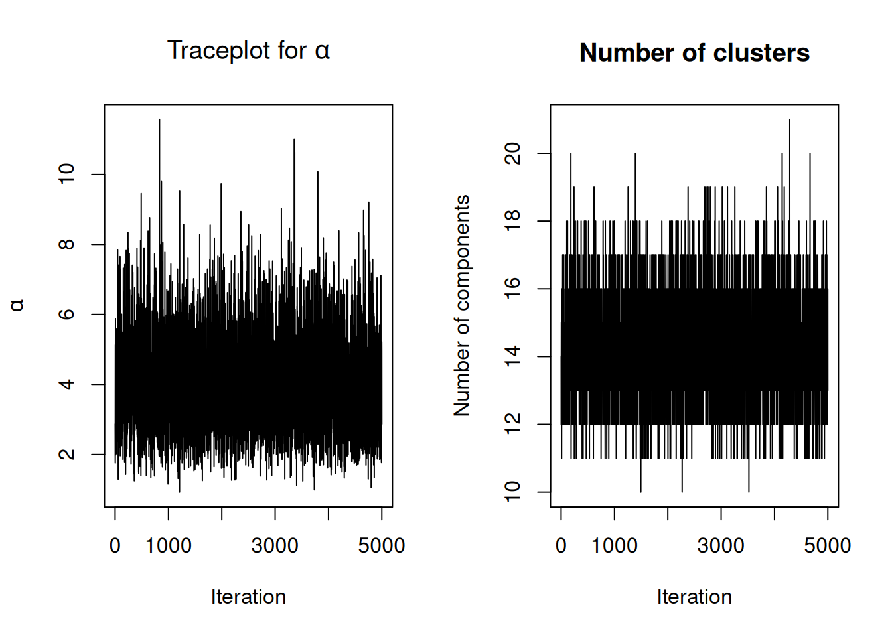
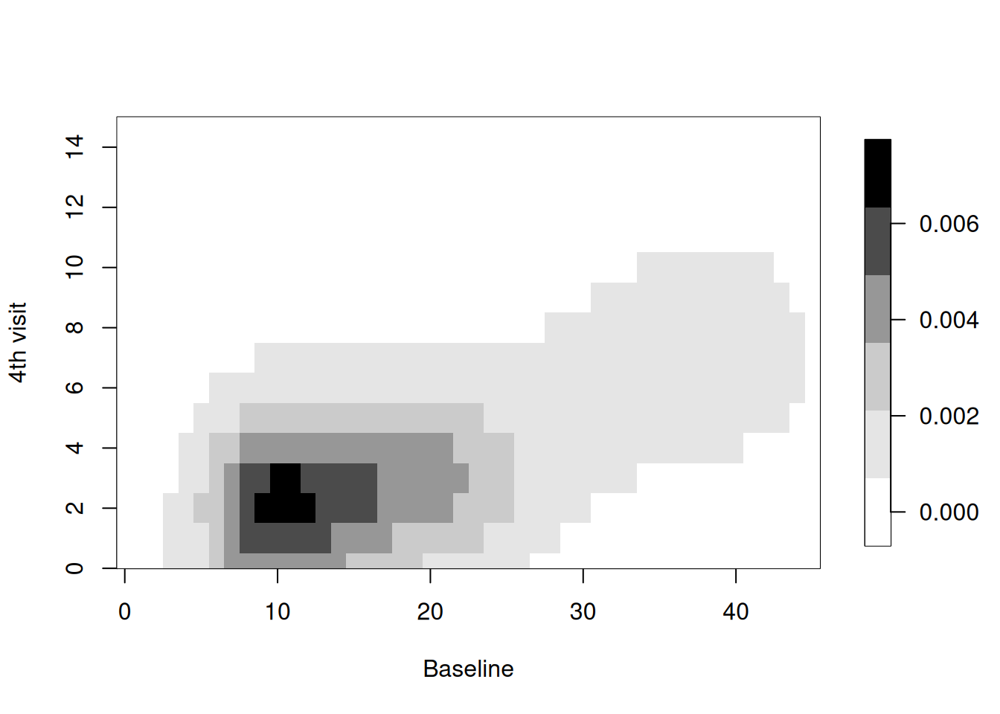
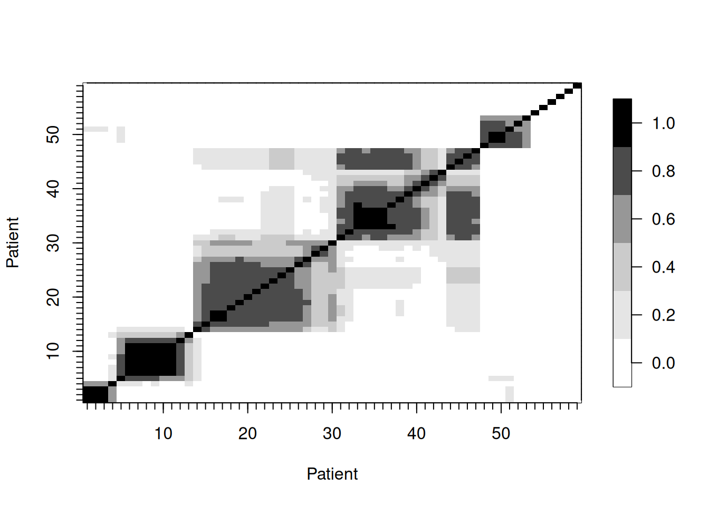

load("../nimbleExamples/seizures.Rda")
names(seizures)[1] "id" "seize" "visit" "trt" "age" Claudia Wehrhahn
March 25, 2021
NIMBLE is a hierarchical modeling package that uses nearly the same language for model specification as the popular MCMC packages WinBUGS, OpenBUGS and JAGS, while making the modeling language extensible — you can add distributions and functions — and also allowing customization of the algorithms used to estimate the parameters of the model.
NIMBLE supports Markov chain Monte Carlo (MCMC) inference for Bayesian nonparametric (BNP) mixture models. Specifically, NIMBLE provides functionality for fitting models involving Dirichlet process priors using either the Chinese Restaurant Process (CRP) or a truncated stick-breaking (SB) representation.
In version 0.10.1, we’ve extended NIMBLE to be able to handle more general multivariate models when using the CRP prior. In particular, one can now easily use the CRP prior when multiple observations (or multiple latent variables) are being jointly clustered. For example, in a longitudinal study, one may want to cluster at the individual level, i.e., to jointly cluster all of the observations for each of the individuals in the study. (Formerly this was only possible in NIMBLE by specifying the observations for each individual as coming from a single multivariate distribution.)
This allows one to specify a multivariate mixture kernel as the product of univariate ones. This is particularly useful when working with discrete data. In general, multivariate extensions of well-known univariate discrete distributions, such as the Bernoulli, Poisson and Gamma, are not straightforward. For example, for multivariate count data, a multivariate Poisson distribution might appear to be a good fit, yet its definition is not trivial, inference is cumbersome, and the model lacks flexibility to deal with overdispersion. See Inouye et al. (2017) for a review on multivariate distributions for count data based on the Poisson distribution.
In this post, we illustrate NIMBLE’s new extended BNP capabilities by modelling multivariate discrete data. Specifically, we show how to model multivariate count data from a longitudinal study under a nonparametric framework. The modeling approach is simple and introduces correlation in the measurements within subjects.
For more detailed information on NIMBLE and Bayesian nonparametrics in NIMBLE, see the User Manual.
We illustrate the use of nonparametric multivariate mixture models for modeling counts of epileptic seizures from a longitudinal study of the drug progabide as an adjuvant antiepileptic chemotherapy. The data, originally reported in Leppik et al. (1985), arise from a clinical trial of 59 people with epilepsy. At four clinic visits, subjects reported the number of seizures occurring over successive two-week periods. Additional data include the baseline seizure count and the age of the patient. Patients were randomized to receive either progabide or a placebo, in addition to standard chemotherapy.
id seize visit trt age
1 101 76 0 1 18
2 101 11 1 1 18
3 101 14 2 1 18
4 101 9 3 1 18
5 101 8 4 1 18
6 102 38 0 1 32We model the joint distribution of the baseline number of seizures and the counts from each of the two-week periods as a Dirichlet Process mixture (DPM) of products of Poisson distributions. Let \(\boldsymbol{y}_i=(y_{i, 1}, \ldots, y_{i,5})\), where \(y_{i,j}\) denotes the seizure count for patient \(i\) measured at visit \(j\), for \(i=1, \ldots, 59\), and \(j=1, \ldots, 5\). The value for \(j=1\) is the baseline count. The model takes the form
\[ \boldsymbol{y}_i \mid \boldsymbol{\lambda}_{i} \sim \prod_{j=1}^5 \mbox{Poisson}(\lambda_{i, j}), \quad\quad \boldsymbol{\lambda}_{i} \mid G \sim G, \quad\quad G \sim DP(\alpha, H), \]
where \(\boldsymbol{\lambda}_{i}=(\lambda_{i,1}, \ldots\lambda_{i,5})\) and \(H\) corresponds to a product of Gamma distributions.
Our specification uses a product of Poisson distributions as the kernel in the DPM which, at first sight, would suggest independence of the repeated seizure count measurements. However, because we are mixing over the parameters, this specification in fact induces dependence within subjects, with the strength of the dependence being inferred from the data. In order to specify the model in NIMBLE, first we translate the information in seize into a matrix and then we write the NIMBLE code.
We specify this model in NIMBLE with the following code in R. The vector xi contains the latent cluster IDs, one for each patient.
n <- 59
J <- 5
data <- list(y = matrix(seizures$seize, ncol = J, nrow = n, byrow = TRUE))
constants <- list(n = n, J = J)
code <- nimbleCode({
for(i in 1:n) {
for(j in 1:J) {
y[i, j] ~ dpois(lambda[xi[i], j])
}
}
for(i in 1:n) {
for(j in 1:J) {
lambda[i, j] ~ dgamma(shape = 1, rate = 0.1)
}
}
xi[1:n] ~ dCRP(conc = alpha, size = n)
alpha ~ dgamma(shape = 1, rate = 1)
})The following code sets up the data and constants, initializes the parameters, defines the model object, and builds and runs the MCMC algorithm. For speed, the MCMC runs using compiled C++ code, hence the calls to compileNimble to create compiled versions of the model and the MCMC algorithm.
Because the specification is in terms of a Chinese restaurant process, the default sampler selected by NIMBLE is a collapsed Gibbs sampler. More specifically, because the baseline distribution \(H\) is conjugate to the product of Poisson kernels, Algorithm 2 from Neal (2000) is used.
set.seed(1)
inits <- list(xi = 1:n, alpha = 1,
lambda = matrix(rgamma(J*n, shape = 1, rate = 0.1), ncol = J, nrow = n))
model <- nimbleModel(code, data=data, inits = inits, constants = constants, dimensions = list(lambda = c(n, J)))Defining modelBuilding modelSetting data and initial valuesRunning calculate on model
[Note] Any error reports that follow may simply reflect missing values in model variables.Checking model sizes and dimensionsCompiling
[Note] This may take a minute.
[Note] Use 'showCompilerOutput = TRUE' to see C++ compilation details.===== Monitors =====
thin = 1: alpha, lambda, xi
===== Samplers =====
CRP_concentration sampler (1)
- alpha
CRP_cluster_wrapper sampler (295)
- lambda[] (295 elements)
CRP sampler (1)
- xi[1:59] Compiling
[Note] This may take a minute.
[Note] Use 'showCompilerOutput = TRUE' to see C++ compilation details.running chain 1...|-------------|-------------|-------------|-------------|
|-------------------------------------------------------|We can extract posterior samples for some parameters of interest. The following are trace plots of the posterior samples for the concentration parameter, \(\alpha\) and the number of clusters.
xiSamples <- samples[, grep('xi', colnames(samples))] # samples of cluster IDs
nGroups <- apply(xiSamples, 1, function(x) length(unique(x)))
concSamples <- samples[, grep('alpha', colnames(samples))]
par(mfrow=c(1, 2))
ts.plot(concSamples, xlab = "Iteration", ylab = expression(alpha), main = expression(paste('Traceplot for ', alpha)))
ts.plot(nGroups, xlab = "Iteration", ylab = "Number of components", main = "Number of clusters")
We can compute the posterior predictive distribution for a new observation \(\tilde{\boldsymbol{y}}\), \(p(\tilde{\boldsymbol{y}}\mid \boldsymbol{y}_1, \ldots, \boldsymbol{y}_n)\), which in turn allows us to obtain univariate or multivariate marginals or conditionals, or any other density estimate of interest. As an illustration, we compute the bivariate posterior predictive distribution for the number of seizures at baseline and at the 4th hospital visit. This is done in two steps. First, we compute posterior samples of the random measure \(G\), which can be done using the getSamplesDPmeasure() function. Based on the MCMC output, getSamplesDPmeasure() returns a list of matrices, each of them corresponding to a single posterior sample from \(G\), using its stick-breaking (SB) representation. The first column of each of these matrices contains the weights of the SB representation of \(G\) while the rest of the columns contain the atoms of the SB representation of \(G\), here \((\lambda_1, \lambda_2, \ldots, \lambda_5)\). Second, we compute the bivariate posterior predictive distribution of the seizure counts at baseline and at the fourth visit, based on the posterior samples of \(G\). We use a compiled nimble function, called ‘bivariate’, to speed up the computations of the bivariate posterior predictive density.
Compiling
[Note] This may take a minute.
[Note] Use 'showCompilerOutput = TRUE' to see C++ compilation details.|-------------|-------------|-------------|-------------|
|-------------------------------------------------------|niter <- length(samplesG)
weightsIndex <- grep('weights', colnames(samplesG[[1]]))
lambdaIndex <- grep('lambda', colnames(samplesG[[1]]))
ygrid <- 0:45
# function used to compute bivariate posterior predictive
bivariateFun <- nimbleFunction(
run = function(w = double(1),
lambda1 = double(1),
lambda5 = double(1),
ytilde = double(1)) {
returnType(double(2))
ngrid <- length(ytilde)
out <- matrix(0, ncol = ngrid, nrow = ngrid)
for(i in 1:ngrid) {
for(j in 1:ngrid) {
out[i, j] <- sum(w * dpois(ytilde[i], lambda1) * dpois(ytilde[j], lambda5))
}
}
return(out)
}
)
cbivariateFun <- compileNimble(bivariateFun)Compiling
[Note] This may take a minute.
[Note] Use 'showCompilerOutput = TRUE' to see C++ compilation details.# computing bivariate posterior predictive of seizure counts are baseline and fourth visit
bivariate <- matrix(0, ncol = length(ygrid), nrow = length(ygrid))
for(iter in 1:niter) {
weights <- samplesG[[iter]][, weightsIndex] # posterior weights
lambdaBaseline <- samplesG[[iter]][, lambdaIndex[1]] # posterior rate of baseline
lambdaVisit4 <- samplesG[[iter]][, lambdaIndex[5]] # posterior rate at fourth visit
bivariate <- bivariate + cbivariateFun(weights, lambdaBaseline, lambdaVisit4, ygrid)
}
bivariate <- bivariate / niterThe following code creates a heatmap of the posterior predictive bivariate distribution of the number of seizures at baseline and at the fourth hospital visit, showing that there is a positive correlation between these two measurements.
collist <- colorRampPalette(c('white', 'grey', 'black'))
fields::image.plot(ygrid, ygrid, bivariate, col = collist(6),
xlab = 'Baseline', ylab = '4th visit', ylim = c(0, 15), axes = TRUE)
In order to describe the uncertainty in the posterior clustering structure of the individuals in the study, we present a heat map of the posterior probability of two subjects belonging to the same cluster. To do this, first we compute the posterior pairwise clustering matrix that describes the probability of two individuals belonging to the same cluster, then we reorder the observations and finally plot the associated heatmap.
pairMatrix <- apply(xiSamples, 2, function(focal) {
colSums(focal == xiSamples)
})
pairMatrix <- pairMatrix / niter
newOrder <- c(1, 35, 13, 16, 32, 33, 2, 29, 39, 26, 28, 52, 17, 15, 23, 8, 31,
38, 9, 46, 45, 11, 49, 44, 50, 41, 54, 21, 3, 40, 47, 48, 12,
6, 14, 7, 18, 22, 30, 55, 19, 34, 56, 57, 4, 5, 58, 10, 43, 25,
59, 20, 27, 24, 36, 37, 42, 51, 53)
reordered_pairMatrix <- pairMatrix[newOrder, newOrder]
fields::image.plot(1:n, 1:n, reordered_pairMatrix , col = collist(6),
xlab = 'Patient', ylab = 'Patient', axes = TRUE)
axis(1, at = 1:n, labels = FALSE, tck = -.02)
axis(2, at = 1:n, labels = FALSE, tck = -.02)
axis(3, at = 1:n, tck = 0, labels = FALSE)
axis(4, at = 1:n, tck = 0, labels = FALSE)
Inouye, D.I., E. Yang, G.I. Allen, and P. Ravikumar. 2017. A Review of Multivariate Distributions for Count Data Derived from the Poisson Distribution. Wiley Interdisciplinary Reviews: Computational Statistics 9: e1398.
Leppik, I., F. Dreifuss, T. Bowman, N. Santilli, M. Jacobs, C. Crosby, J. Cloyd, et al. 1985. A Double-Blind Crossover Evaluation of Progabide in Partial Seizures: 3: 15 Pm8. Neurology 35.
Neal, R. 2000. Markov chain sampling methods for Dirichlet process mixture models. Journal of Computational and Graphical Statistics 9: 249–65.